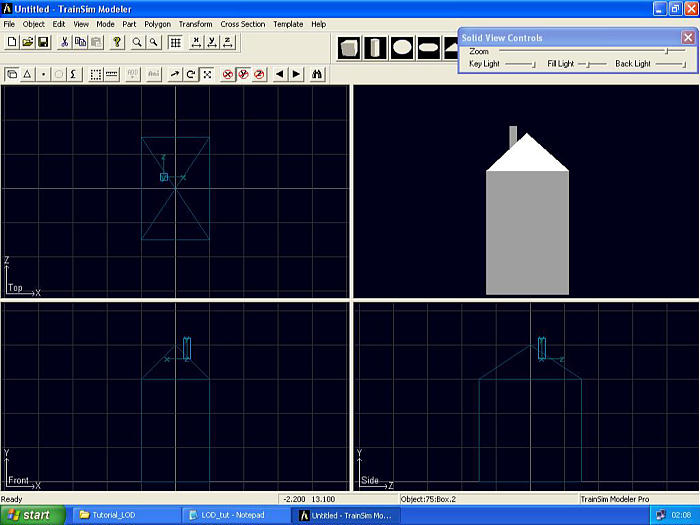
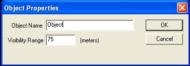
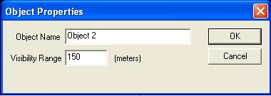
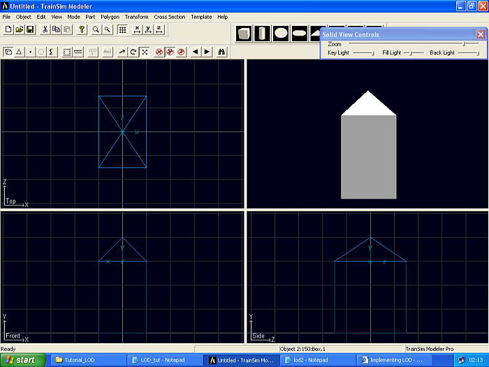
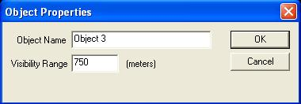
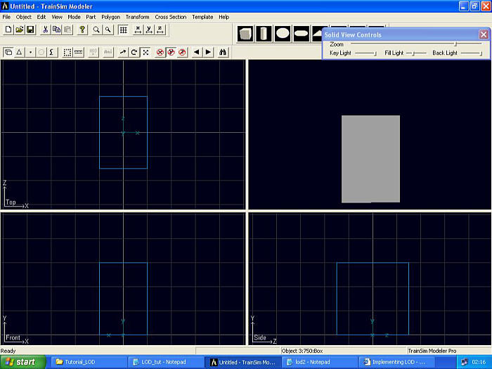

Adjusting Level Of Detail (LOD) In Train Sim Modeler
by Alan Heath
Overview
To demonstrate how simple this technique is, we are going to produce a basic house shape, then apply Level Of Detail (LOD) to that shape.

|

|
To demonstrate how simple this technique is, we are going to produce a basic house shape, then apply Level Of Detail (LOD) to that shape.
Start with a blank project in TSM.
Make a box with the dimensions Width (X)=10, Height (Y)=15, Depth (Z)=15, set origin at bottom. You should now see a oblong box on screen.
Make another box: Width=10 Height=5 Depth=15, set the origin Y position to 15, origin at bottom. You should now see a separate part above the old box.
Select point Mode (F8), then select "Select" mode (F11). In the "Front" view select the top two "Points".Press (S) to goto Scale mode, constrain the Y axis (Y) and scale the points until they meet. You should see a rough house shape with a roof.
Make another box, set the origin at the bottom, origin X position to -1.75, origin Y position to 17, origin Z position to 1.75. Width=1, Height=4, depth=1. You should see a house with a roof and a chimney now.

We now have a basic model of a house.
At this point you would normally apply textures. Always apply textures before defining LOD.
I usually combine the shapes, but in this tutorial I am going to save the parts separately. I saved the parts as Box for the biggest box, Box1 for the roof box, Box3 for the Chimney part.
From the menu select Object | Properties. Now Enter a value of 75, this refer's to the object being visible for up to 75 meters. Don't touch the Object Name! Press OK.

Now select from the menu, Click Object | Add Object. You should get another properties pop-up, enter your next distance level here, 150. Press OK.

You have a blank screen, don't worry, select from menu Part | Load Select Box.
Again select Part | Load Select Box1.

You should see your house with no chimney. This shape will be visible beyond 75m through to the 150m which you set in the Properties.
You have made 1 Level Of Detail: not loading the chimney box has reduced polygons and parts.
Now select Object | Add Object, set to 750m. Press OK

From menu select Part | Load . Select Box.
You now see just a box. That's it: you've defined three LOD; beyond 750m your object will vanish.

Note: You can cycle through the LODs by using SHIFT+(N) for Next and SHIFT+(P) for previous. (CTRL)+(HOME) returns you to the main object.